Case study 02 Governance
Governing autonomous work without eliminating autonomy
Autonomy should be proportional to consequence and reversibility. The controls themselves must also earn their cost.
Executive question
How much authority should an AI agent actually have?
An agent that can only recommend creates limited leverage. An agent with unrestricted authority creates unacceptable risk. The useful territory between those extremes must be designed and measured.
Hypothesis
Decision rights should follow consequence, not a simple on-or-off autonomy setting.
Conventional software should define what can proceed, what requires approval, and what should never be delegated. The human governs those boundaries rather than executing every routine step.

What I designed
A written charter, enforceable controls, human approval boundaries, and graduated unattended work.
- A versioned charter defining constraints, privacy boundaries, and the situations requiring a person.
- Permission and inventory rules enforced by software rather than memory.
- Persistent delegated work with ownership, retries, durable state, and explicit outcomes.
- Advisory-first controls that earn blocking authority only after measured accuracy.
What failed
The controls outgrew the operator—and I then removed them too abruptly.
A review system initially applied to nearly everything. The unreviewed plan queue grew from 2 to 29 in twelve days because plans arrived at about 4.3 per day while reviews completed at about 2.5. The warnings became noise.
Under that pressure, I removed the review requirement. Four days after the removal was formalized, a redesigned system passed the acceptance targets that had been set in advance. I had discarded a useful control because its predecessor had exhausted the operator.
What changed
Review and autonomy became proportional.
Local, reversible work no longer carried the full review burden. Significant and consequential work did. The system also began checking governance changes against written goals so that introducing or retiring a control required evidence in both directions.
Enterprise implication
AI governance needs an authority architecture, not only a policy.
Organizations need clear rules for what AI may observe, recommend, and change; what evidence completion requires; when approval is mandatory; and how autonomy is revoked. The companies that learn where autonomy creates leverage—and where controls create their own cost—will be better positioned than those maximizing either one.
Evidence and limits
The GitHub repository contains the dated decision timeline, policy, governance code, tests, and explicit limitations. These are operating lessons from an independent environment, not proof of an enterprise governance program.